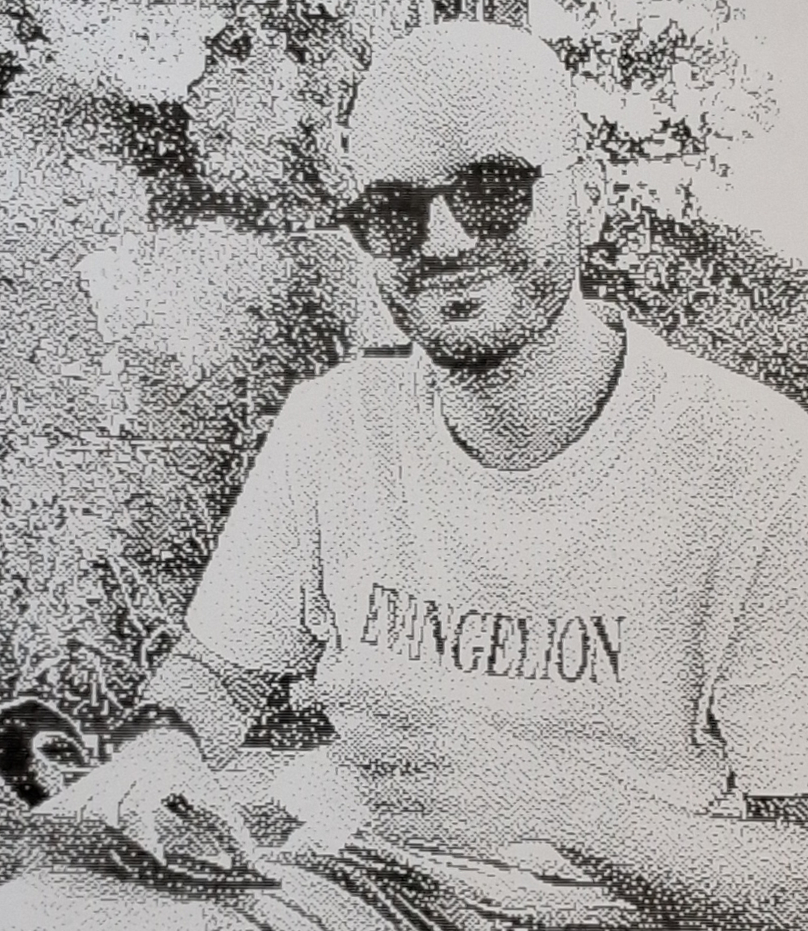

PhD student in numerical analysis & scientific computing
Email: alessio.oliviero(at)uniroma1.it
Affiliation: Department of Mathematics "Guido Castelnuovo", Sapienza University of Rome
Address: Piazzale Aldo Moro, 5 — 00185 Rome, Italy
I am part of the research group in numerical analysis and scientific computing at the Department of Mathematics of Sapienza University of Rome.